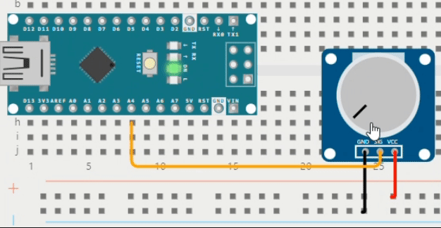
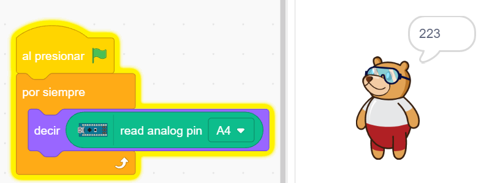
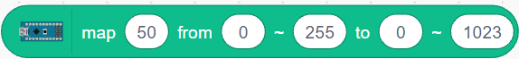
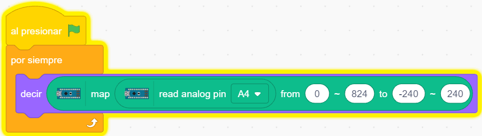
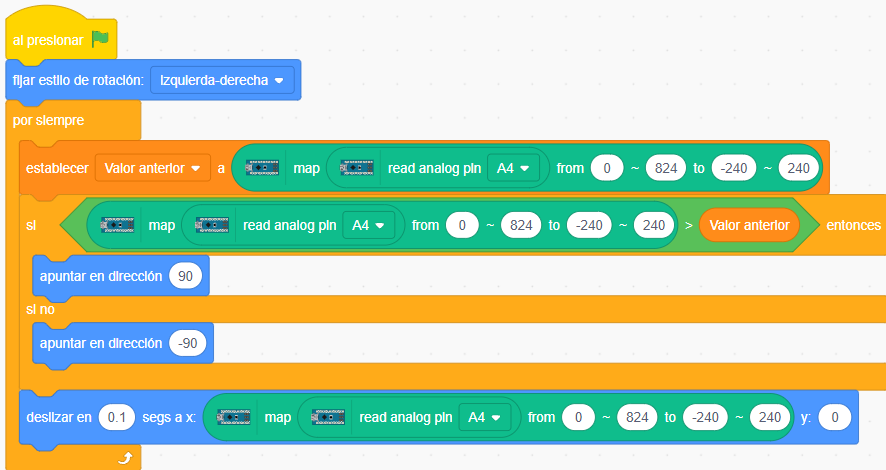
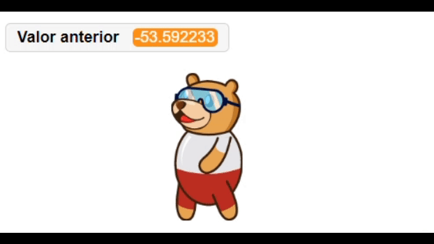

Una resistencia variable
El potenciómetro es una resistencia variable (a diferencia de las tradicionales que proporcionan un valor único) que cambia a medida que se gira su perilla. Al estar conectado a la fuente de energía en sus dos patitas laterales (una a (+) y la otra a (-)), el valor de la salida por su patita central -que se ingresa a A4- depende de la Ley de Ohm.
1°
La Ley de Ohm
Primera Programación
Con muy pocos bloques de programa podemos conocer los valores que nos entrega el potenciómetro al girar su perilla.
|  |  |
2°
Mapeo de valores
Podemos hacer que el rango de valores que nos entrega el potenciómetro se transformen en otro rango de valores, usando el bloque  ubicado en la categoría Arduino Nano.
Comenzando por la izquierda:
- El primer valor es la fuente de los valores, en nuestro caso la lectura analógica del pin A4.
- El segundo valor, es el valor mínimo que nos entrega el potenciómetro, o sea 0.
- El tercer valor, es el valor máximo que nos entrega el potenciómetro, en nuestro caso 824.
- El cuarto valor, es el valor mínimo del nuevo rango, por ejemplo -240 (borde izquierdo del escenario en Pictoblox).
- El quinto valor, es el valor máximo del nuevo rango, por ejemplo +240 (borde derecho del escenario en Pictoblox).
|  |
Al girar el potenciómetro, Tovi nos informa del valor mapeado: entre -240 y 240. |
3°
Hacer caminar a Tovi con el potenciómetro
Podemos usar los valores mapeados del potenciómetro, para hacer que Tovi se desplace de derecha a izquierda en la pantalla:

Nos vamos a apoyar en una variable Valor anterior para almacenar los valores que llegan a A4 en un momento, para luego poder comparar con los nuevos valores. Si los nuevos valores son mayores quiere decir que Tobi está yendo de izquierda a derecha (de -240 a 240); entonces lo hacemos apuntar en dirección 90 (derecha). Si sucede lo contrario (los nuevos valores son menores a los anteriores almacenados en la variable), Tobi está yendo de derecha a izquierda, entonces lo hacemos apuntar en dirección -90 (izquierda).
¡A experimentar!
Mirando la animación y en base a la programación anterior, haz que Tovi camine (cambiando disfraz) en la pantalla, y se muestren los valores de su posición en el eje de las x:
